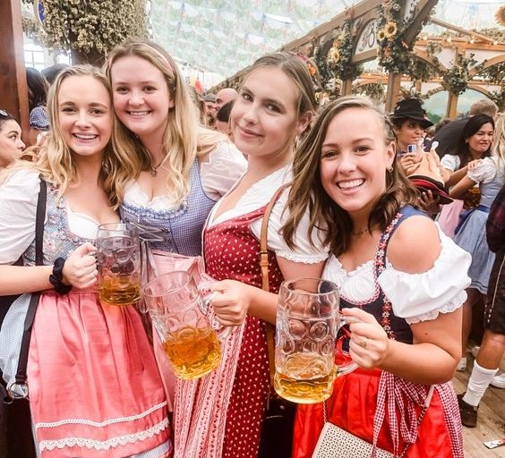
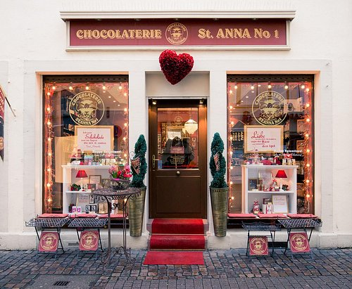
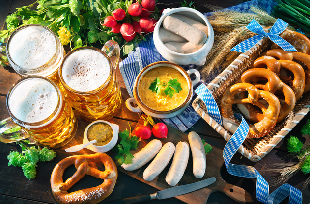
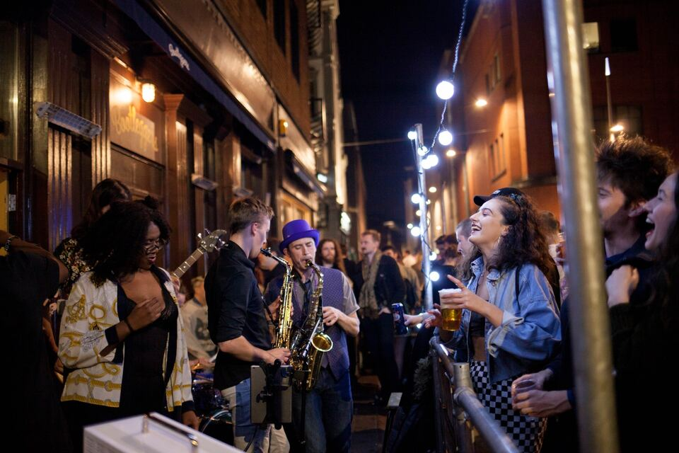

Bavarian Culture Showcase
more

Souvenirs and Shopping
more

Bavarian Culinary Delights
more

Live Music and Entertainment
more
Savor a wide variety of world-famous German beers, including
lagers, ales, and stouts.
Raise your stein high and enjoy traditional Bavarian toasts with
friends old and new.
Be sure to try the special brews crafted exclusively for
Oktoberfest.
Immerse yourself in the rich Bavarian culture with art
exhibitions and demonstrations.
Learn about the history and traditions of Oktoberfest through
informative displays.
Shop for unique Bavarian souvenirs, clothing, and trinkets at
our market stalls.
Take home a piece of Oktoberfest to remember this incredible
experience.
Indulge in mouthwatering German cuisine, from bratwurst and
schnitzel to pretzels and sauerkraut.
Experience the rich flavors of authentic Bavarian dishes
prepared by skilled chefs.
Get your groove on with live traditional German bands and folk
dancers.
Expect a vibrant atmosphere filled with music, dancing, and
cultural performances.
Participate in traditional Oktoberfest games, including
stein-holding contests and bratwurst-eating competitions.
Bring the whole family; we have activities for all ages,
including a dedicated kids' zone.